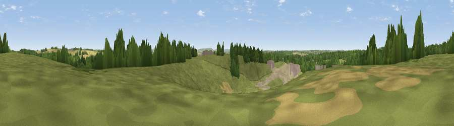

Viewpoint near Heath and Reach
#34275 in England · top 62% of its area beats it · near Heath and ReachThe view, rendered

A 360° render of this exact spot computed from the terrain model, tree cover and land cover — summer colours, afternoon light, calibrated against photographs of famous viewpoints. Real trees, hedges and buildings will differ in detail.
The panorama
Grey silhouette: terrain skyline in each direction (720 bearings, Earth curvature and refraction included). Dashed green: skyline with trees (+15 m) and buildings (+8 m) as obstacles. Blue strip: how far the ground is visible on each bearing.
Where the view opens
Wedge length = distance to the farthest visible ground on that bearing (vegetation-aware). Rings at 10, 25 and 50 km.
What fills the view
56% grassland · 18% woodland · 13% cropland · 11% bare ground · 2% built-up
Angular shares of the visible panorama (visual magnitude), not map area. Landscape diversity 0.54 (0–1 Shannon).
Key numbers
More beautiful places nearby
The staircase of upgrades: each row has a higher view potential than everything closer. Driving times are estimates from straight-line distance, calibrated against real road routing — check an actual route before setting out.
| Place | Direction | Drive | Score |
|---|---|---|---|
| Viewpoint near Heath and Reach | S · 1 km | ~2 min | 46.7 |
| Viewpoint near Bow Brickhill | NNW · 6 km | ~12 min | 54.0 |
| Viewpoint near Bow Brickhill | NNW · 6 km | ~13 min | 57.0 |
| Viewpoint near Church End | SE · 11 km | ~21 min | 65.8 |
| Beacon Hill | SSE · 12 km | ~23 min | 74.1 |
| Viewpoint near Halton | SSW · 19 km | ~33 min | 74.3 |
| Coombe Hill Monument | SSW · 23 km | ~39 min | 75.5 |
| Viewpoint near Woolstone | WSW · 76 km | ~100 min | 76.7 |
51.94923, -0.64572 · source: screening · position refined by local search. Computed location — check access rights before visiting.